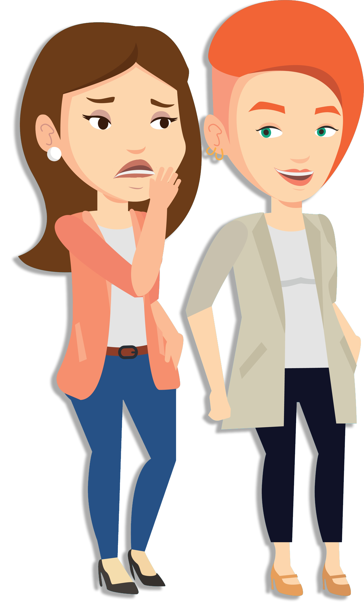
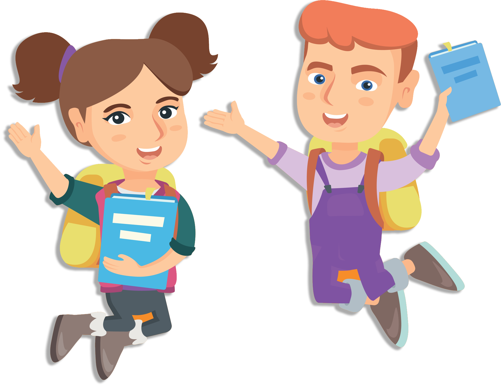

Mine elever har mistet koncentrationen, hvad skal jeg stille op?
HJÆLP KIRSTEN MED AT FINDE DEN BEDSTE LÆRINGSMETODE
Kirsten underviser sine elever, men
eleverne larmer fordi de har svært ved at koncentrere sig.
Tryk på knapperne og find ud af hvilken løsning der vil fungere
bedst for Kirsten.
KIRSTEN SPØRGER EN KOLLEGA TIL RÅDS

Kirsten skynder sig ud på gangen og møder tilfældigvis sin
kollega Charlotte. Kirsten spørger Charlotte til råds om hvad
hun skal gøre. De snakker frem og tilbage, men når ikke til en konklusion.
Charlotte forlader Kisten med ‘’De bliver bedre i morgen’’. Kirsten fik ikke
svar på hendes problem så derfor må hun søge andre løsninger.
KIRSTEN ÆNDRER SIN UNDERVISNINGSFORM

Kirsten tænker at eleverne ikke kan koncentrere sig fordi de har siddet ved
deres borde i for lang tid. Derfor beder hun sine elever om at rejse sig og ryste
med armene og benene. Efter de har gjort dette i et stykke tid, beder hun sig om at sætte sig igen,
og hun håber de bliver koncentreret, med uden held da børnene igen bliver ved at snakke og larme igen.
Efter en undervisningsdag er Kirsten hjemme.
Her begår hun sig på facebook, hvor hun ser et opslag fra Danmarks Lærerforening.
Det er et opslag som promovere for en platform ved navn KEDU som er et fællesskab for lærer
og et læringsredskab for robotten KUBO som er en robot da formidler tunge emner ned til simpel læring.
Kirsten klikker på ‘HØR MERE’.